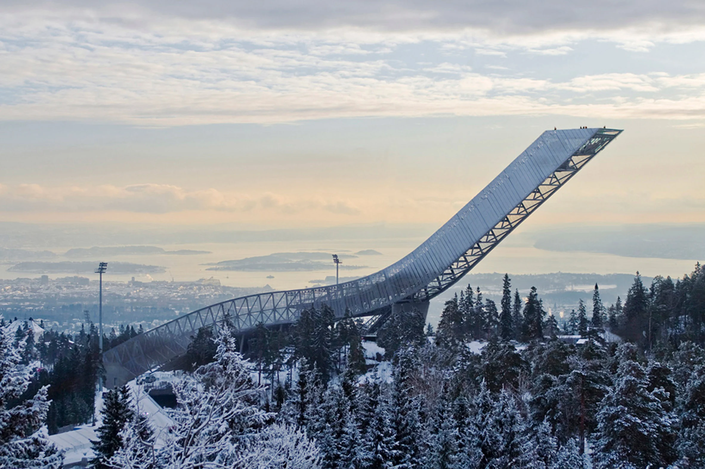

Ski jumping is a winter sport in which competitors aim to achieve the farthest jump after sliding down on their skis from a specially designed curved ramp.
Along with jump length, competitor's aerial style and other factors also affect the final score. Ski jumping was first contested in Norway in the late 19th century, and later spread through Europe and North America in the early 20th century.
Setting up the world record by Stefan Kraft meant that he made the impossible possible.
Jump length: 253.5 metres (832 feet)
Achieving the second place of the world record by Robert Johansson.
Same day as the record holder, chances are low, yet they conquered everything.
Jump length: 252 metres (827 feet)
Proudly taking the third place by Anders Fannemel.
Hardest willing competitors put against each other, all 3 of them being pretty close to the highest victory, the honourable first place.
They must keep in mind though, only one of them can be the first.
Nonetheless they are pretty brave souls.
Jump length: 251.5 metres (825 feet)
Jump length: 200 metres (656 feet)
Holding two records at once, owning the second place aswell.
Jump length: 188 metres (617 feet)
Jump length: 167 metres (548 feet)